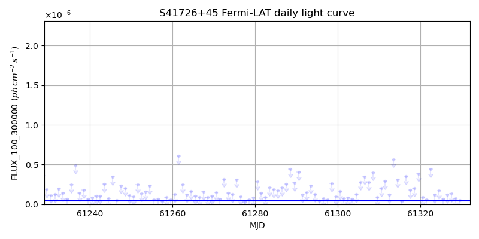
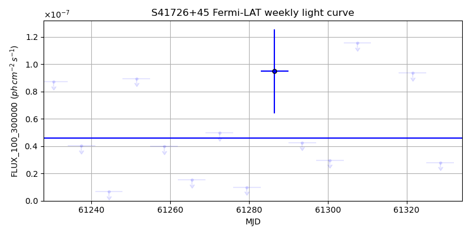
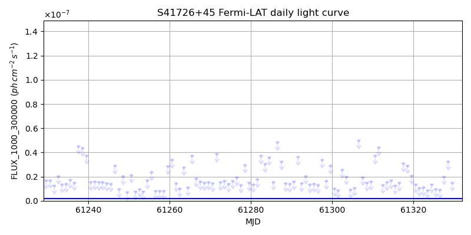

LAT Lightcurve site: https://fermi.gsfc.nasa.gov/ssc/data/access/lat/msl_lc/source/S4_1726p45
NED: Query
Time of last update of this page: UT: 2026-10-17 15:23 (MJD: 61330.641)
| Property | Value |
|---|---|
| R.A. | 17:27:27.60 |
| Dec. | 45:30:39.6 |
| z | 0.717 |
| 3FGL SpectrumType | LogParabola |
| 3FGL PL Index | |
| 3FGL Flux_100_300000 | 4.61e-08 1 / (s cm2) |
| 3FGL Flux_1000_300000 | 1.76e-09 1 / (s cm2) |
| 3FGL Flux >200 GeV | 1.04e-13 1 / (s cm2) |
| 3FGL Extrap. Crab >200 GeV | 0.00 |
| 3FGL Flux After EBL Absorption >200GeV | 8.07e-15 1 / (s cm2) |
| 3FGL EBL Crab Fraction >200GeV | 0.00 |

| MJD | dMJD | Flux | dFlux | Frac3FGL | FracCrab>200GeV | EBLFracCrab>200GeV |
|---|---|---|---|---|---|---|
| 61325.50 | 0.50 | 6.29e-08 | 0.00e+00 | 0.00 | 0.00 | 0.00 |
| 61326.50 | 0.50 | 1.15e-07 | 0.00e+00 | 0.00 | 0.00 | 0.00 |
| 61327.50 | 0.50 | 1.33e-07 | 0.00e+00 | 0.00 | 0.00 | 0.00 |
| 61328.50 | 0.50 | 7.21e-08 | 0.00e+00 | 0.00 | 0.00 | 0.00 |
| 61329.50 | 0.50 | 5.41e-08 | 0.00e+00 | 0.00 | 0.00 | 0.00 |

| MJD | dMJD | Flux | dFlux | Frac3FGL | FracCrab>200GeV | EBLFracCrab>200GeV |
|---|---|---|---|---|---|---|
| 61293.50 | 3.50 | 4.26e-08 | 0.00e+00 | 0.00 | 0.00 | 0.00 |
| 61300.50 | 3.50 | 2.97e-08 | 0.00e+00 | 0.00 | 0.00 | 0.00 |
| 61307.50 | 3.50 | 1.16e-07 | 0.00e+00 | 0.00 | 0.00 | 0.00 |
| 61314.50 | 3.50 | 1.82e-07 | 0.00e+00 | 0.00 | 0.00 | 0.00 |
| 61321.50 | 3.50 | 9.35e-08 | 0.00e+00 | 0.00 | 0.00 | 0.00 |

| MJD | dMJD | Flux | dFlux | Frac3FGL | FracCrab>200GeV | EBLFracCrab>200GeV |
|---|---|---|---|---|---|---|
| 61325.50 | 0.50 | 9.66e-09 | 0.00e+00 | 0.00 | 0.00 | 0.00 |
| 61326.50 | 0.50 | 8.94e-09 | 0.00e+00 | 0.00 | 0.00 | 0.00 |
| 61327.50 | 0.50 | 1.99e-08 | 0.00e+00 | 0.00 | 0.00 | 0.00 |
| 61328.50 | 0.50 | 3.24e-08 | 0.00e+00 | 0.00 | 0.00 | 0.00 |
| 61329.50 | 0.50 | 1.48e-08 | 0.00e+00 | 0.00 | 0.00 | 0.00 |
| MJD | dMJD | Flux | dFlux | Frac3FGL | FracCrab>200GeV | EBLFracCrab>200GeV |
|---|---|---|---|---|---|---|
| 61293.50 | 3.50 | 4.87e-09 | 0.00e+00 | 0.00 | 0.00 | 0.00 |
| 61300.50 | 3.50 | 1.10e-08 | 0.00e+00 | 0.00 | 0.00 | 0.00 |
| 61307.50 | 3.50 | 6.61e-09 | 0.00e+00 | 0.00 | 0.00 | 0.00 |
| 61314.50 | 3.50 | 3.04e-09 | 0.00e+00 | 0.00 | 0.00 | 0.00 |
| 61321.50 | 3.50 | 1.74e-09 | 0.00e+00 | 0.00 | 0.00 | 0.00 |
--------------------------------------------------------- Using user-supplied coords: 17:27:27.60 45:30:39.6 2000 --------------------------------------------------------- FLWO UT night of: 2026-10-18 Local Sid. @ Midnight: 01:23 Sunset (-15.0) (local, UT): 18:56 01:56 Sunrise (-15.0) (local, UT): 05:22 12:22 Moonrise (local, UT): Moonset (local, UT): 22:59 05:59 Moon phase: 0.47 --------------------------------------------------------- AzTime LSID UT Obj_el Obj_az Mn_el Mn_az Sep. --------------------------------------------------------- 18:56 20:18 01:56 54.4 305.3 30.5 195.3 76.1 19:26 20:48 02:26 49.2 304.6 28.5 202.5 76.1 19:56 21:18 02:56 43.9 304.7 25.9 209.3 76.0 20:26 21:48 03:26 38.7 305.4 22.6 215.6 76.0 20:56 22:19 03:56 33.5 306.6 18.8 221.3 76.0 21:26 22:49 04:26 28.4 308.2 14.5 226.6 76.0 21:56 23:19 04:56 23.5 310.2 9.9 231.4 76.0 22:26 23:49 05:26 18.7 312.5 5.0 235.7 76.0 22:56 00:19 05:56 14.1 315.2 0.2 239.8 75.9 23:26 00:49 06:26 9.7 318.2 -5.5 243.5 75.9 23:56 01:19 06:56 5.7 321.5 -11.3 247.0 75.9 00:26 01:49 07:26 2.0 325.1 -17.0 250.4 75.9 00:56 02:19 07:56 -1.0 329.1 -22.8 253.6 75.9 01:26 02:49 08:26 -4.1 333.4 -28.7 256.7 75.9 01:56 03:19 08:56 -7.5 337.9 -34.7 259.8 75.9 02:26 03:49 09:26 -9.7 342.8 -40.7 263.0 76.0 02:56 04:20 09:56 -11.3 347.9 -46.8 266.4 76.0 03:26 04:50 10:26 -12.3 353.2 -52.8 270.1 76.0 03:56 05:20 10:56 -12.8 358.6 -58.9 274.3 76.1 04:26 05:50 11:26 -12.7 4.0 -64.9 279.6 76.1 04:56 06:20 11:56 -11.9 9.3 -70.8 287.0 76.2 05:22 06:46 12:22 -10.8 13.8 -75.7 297.1 76.3 --------------------------------------------------------- Dark hours >55 deg.: 0.00